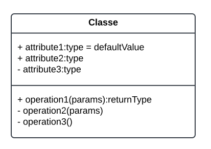
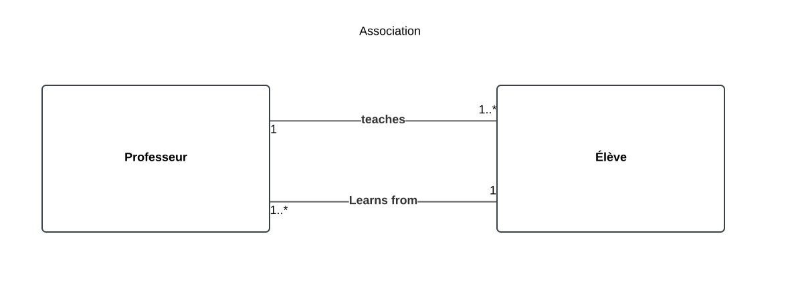
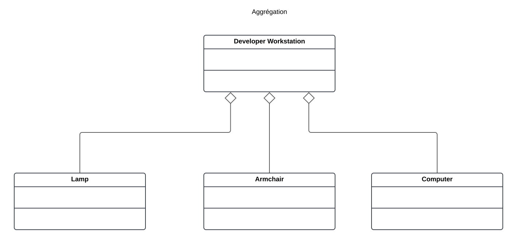
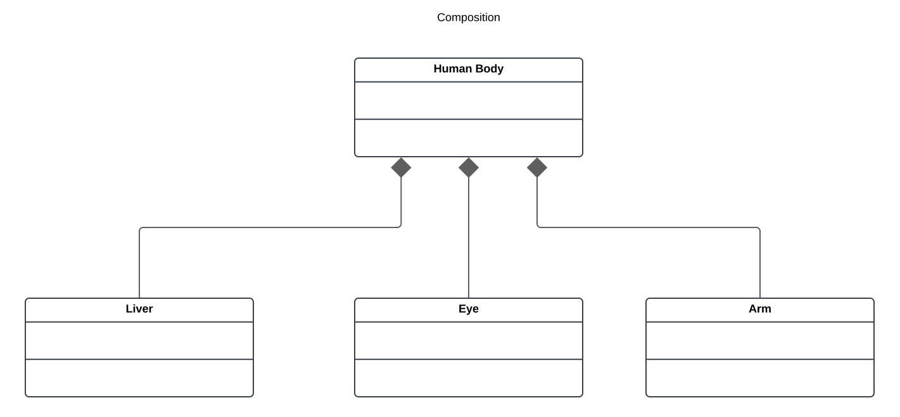
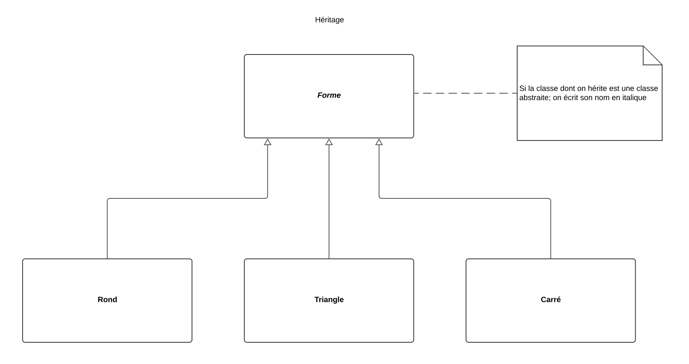
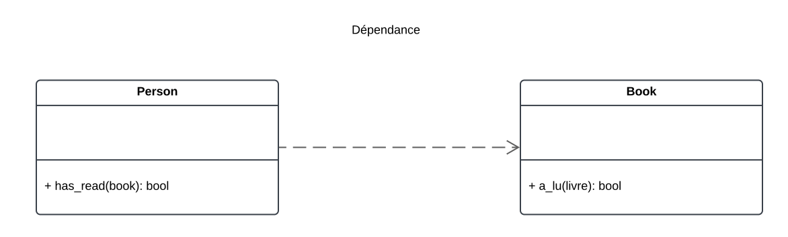
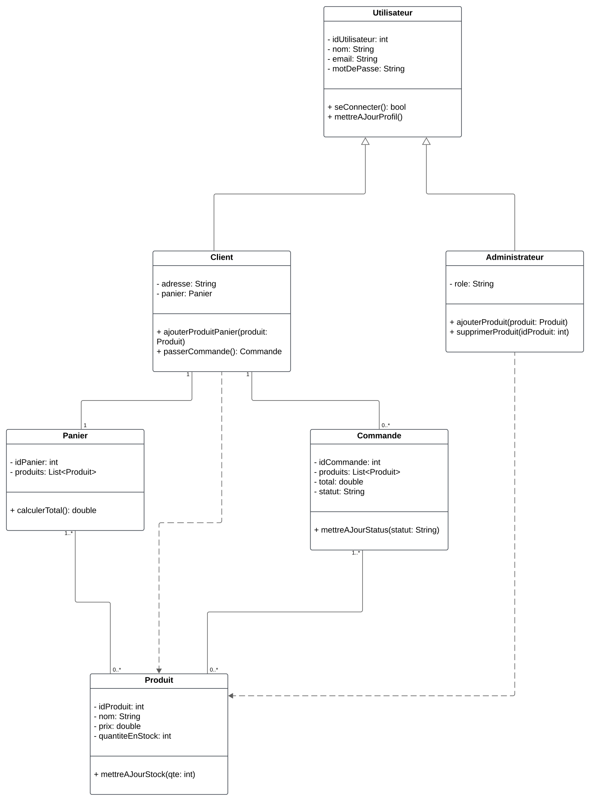

Diagrammes de Classes
Objectif
Les diagrammes de classes sont des outils fondamentaux en UML qui permettent de modéliser la structure statique d’un système. Ils représentent les classes, leurs attributs, méthodes, et relations, offrant une vue d’ensemble des éléments constitutifs d’un système logiciel.
Cas principaux d’utilisation
-
Représenter la structure statique d’un système :
- Montrer les classes, leurs propriétés, leurs méthodes, et leurs associations.
-
Faciliter la conception orientée objet :
- Identifier les objets, leurs responsabilités et leurs relations.
-
Documenter les relations entre classes :
- Fournir une vue claire des dépendances, généralisations, et associations dans le système.
-
Base pour le développement et la maintenance :
- Guider l’implémentation en traduisant les diagrammes en code source.
- Servir de référence pour la maintenance et l’évolution du système.
Composants principaux
1. Classes
-
Définition :
Une classe est une entité abstraite qui définit les propriétés (attributs) et comportements (méthodes) communs à un groupe d’objets. -
Notation UML :
Représentée par un rectangle divisé en trois parties :- Nom de la classe (en haut).
- Attributs (au milieu).
- Méthodes (en bas).
Exemple de notation

Visibilités
- Public (+) : Accessible partout.
- Privé (-) : Accessible uniquement dans la classe.
- Protégé (#) : Accessible dans la classe et ses sous-classes.
2. Relations entre classes
a. Association
- Définition :
Une relation où une classe utilise ou connaît une autre. - Notation UML :
Une ligne simple entre deux classes. - Multiciplité :
Indique combien d’instances d’une classe peuvent être associées à une autre (ex. 1..* pour une ou plusieurs instances).
| Multiplicité | Signification | Exemple d'usage |
|---|---|---|
1 | Exactement une instance est associée | Une personne a exactement un passeport. |
0..1 | Une instance est optionnelle | Un employé peut avoir aucun ou un bureau. |
* ou 0..* | Une instance peut être associée à zéro ou plusieurs | Un professeur peut enseigner à aucun ou plusieurs étudiants. |
1..* | Une instance est associée à au moins une instance | Une commande doit contenir au moins un produit. |
n | Exactement n instances sont associées | Un hexagone a exactement 6 côtés. |
n..m | Entre n et m instances sont associées | Une équipe doit avoir entre 3 et 11 joueurs. |

b. Aggregation
- Définition :
Une relation "partie-tout" où les parties peuvent exister indépendamment du tout. - Notation UML :
Une ligne avec un losange vide du côté du tout.

c. Composition
- Définition :
Une relation "partie-tout" forte où les parties ne peuvent exister sans le tout. - Notation UML :
Une ligne avec un losange plein du côté du tout.

d. Héritage (Généralisation)
- Définition :
Une relation hiérarchique où une classe hérite des propriétés et comportements d’une classe parent. - Notation UML :
Une flèche avec un triangle vide pointant vers la classe parent.

e. Dépendance
- Définition :
Une relation faible où une classe dépend de l’existence d’une autre pour fonctionner. - Notation UML :
Une flèche pointillée entre deux classes.

f. Interface
- Définition :
Une classe abstraite contenant uniquement des méthodes sans implémentation, définissant un comportement attendu. - Notation UML :
Représentée par un rectangle avec le mot-clé<<interface>>.
3. Attributs
- Définition :
Propriétés ou variables définies dans une classe. - Caractéristiques :
- Ont un nom, un type de données, et parfois une valeur par défaut.
- Peuvent être publics, privés, ou protégés.
4. Méthodes
- Définition :
Comportements ou fonctions que peut exécuter une classe. - Caractéristiques :
- Ont un nom, des paramètres, et un type de retour.
- Peuvent être abstraites (définies mais non implémentées) ou concrètes.
Structure et présentation d’un diagramme de classes
-
Identification des classes :
- Identifier les entités principales du système à modéliser.
-
Définition des attributs et méthodes :
- Ajouter les propriétés et comportements pertinents pour chaque classe.
-
Définition des relations :
- Identifier et tracer les relations pertinentes entre les classes (ex. associations, héritages, compositions).
-
Ajout des multiplicité et visibilités :
- Spécifier les règles de multiplicité et les niveaux de visibilité applicables.
Résumé
Les diagrammes de classes sont un pilier de la modélisation orientée objet. Ils offrent une vue d’ensemble claire et structurée des classes, de leurs propriétés et comportements, et des relations qui les lient. Ces diagrammes constituent une base essentielle pour concevoir, développer et maintenir des systèmes logiciels robustes.
Exemple Concret : Gestion d'un Store en Ligne
Description du contexte :
Un store en ligne permet aux clients de parcourir les produits, passer des commandes, gérer leur compte, et consulter l'historique de leurs achats. Les administrateurs peuvent gérer les produits et traiter les commandes.
Classes principales :
-
Utilisateur
- Attributs :
idUtilisateur : int- Identifiant unique pour chaque utilisateur.nom : String- Nom de l'utilisateur.email : String- Adresse e-mail de l'utilisateur.motDePasse : String- Mot de passe de l'utilisateur.
- Méthodes :
seConnecter() : bool- Permet à l'utilisateur de se connecter.mettreAJourProfil() : void- Met à jour les informations personnelles.
- Attributs :
-
Client (hérite de Utilisateur)
- Attributs :
adresse : String- Adresse de livraison du client.panier : Panier- Panier en cours d'utilisation.
- Méthodes :
ajouterProduitPanier(produit : Produit) : void- Ajoute un produit au panier.passerCommande() : Commande- Valide le panier et crée une commande.
- Attributs :
-
Administrateur (hérite de Utilisateur)
- Attributs :
role : String- Rôle ou permissions spécifiques.
- Méthodes :
ajouterProduit(produit : Produit) : void- Ajoute un produit au store.supprimerProduit(idProduit : int) : void- Supprime un produit.
- Attributs :
-
Produit
- Attributs :
idProduit : int- Identifiant unique du produit.nom : String- Nom du produit.prix : double- Prix du produit.quantiteEnStock : int- Quantité disponible.
- Méthodes :
mettreAJourStock(qte : int) : void- Met à jour la quantité en stock.
- Attributs :
-
Panier
- Attributs :
idPanier : int- Identifiant unique du panier.produits : List<Produit>- Liste des produits dans le panier.
- Méthodes :
calculerTotal() : double- Calcule le total des articles dans le panier.
- Attributs :
-
Commande
- Attributs :
idCommande : int- Identifiant unique de la commande.produits : List<Produit>- Liste des produits commandés.total : double- Montant total de la commande.statut : String- Statut actuel de la commande (ex. "En cours", "Expédiée").
- Méthodes :
mettreAJourStatut(statut : String) : void- Modifie le statut de la commande.
- Attributs :
Relations UML :
-
Héritage :
- Client et Administrateur héritent de la classe Utilisateur.
-
Association :
- Client est associé à Panier (relation 1:1).
- Client est associé à Commande (relation 1:N).
- Produit est associé à Panier (relation N:N).
- Produit est associé à Commande (relation N:N).
-
Cardinalités :
- Un Client peut avoir plusieurs Commandes, mais un Panier unique.
- Un Panier peut contenir plusieurs Produits.
- Une Commande inclut plusieurs Produits.
-
Dépendance :
- Administrateur dépend de Produit pour ajouter ou supprimer des articles du store.
Exemple de diagramme textuel (pour le représenter graphiquement) :
-
Classes et attributs :
- Utilisateur
- idUtilisateur : int
- nom : String
- email : String
- motDePasse : String
- Client (hérite de Utilisateur)
- adresse : String
- panier : Panier
- Administrateur (hérite de Utilisateur)
- role : String
- Produit
- idProduit : int
- nom : String
- prix : double
- quantiteEnStock : int
- Panier
- idPanier : int
- produits : List
- Commande
- idCommande : int
- produits : List
- total : double
- statut : String
- Utilisateur
-
Relations :
- Utilisateur <|-- Client
- Utilisateur <|-- Administrateur
- Client --> Panier (1:1)
- Client --> Commande (1:N)
- Produit --> Panier (N:N)
- Produit --> Commande (N:N)
Correction

Quiz
Exercice
Système de Gestion de Restaurant
Contexte du système
Un restaurant souhaite mettre en place un système informatique pour gérer les menus, les commandes des clients, les tables disponibles, et les employés.
Description des besoins
-
Menu :
- Un menu est composé de plusieurs plats. Chaque plat a un nom, une description, un prix et une catégorie (entrée, plat principal, dessert).
- Les menus sont modifiables par les responsables du restaurant.
-
Table :
- Une table a un numéro unique et un nombre de places disponibles.
- Une table peut être libre ou occupée.
- Les réservations peuvent être associées à une table.
-
Commande :
- Une commande est passée par un client. Elle peut contenir plusieurs plats.
- Chaque commande a un statut (en attente, en préparation, servie, payée).
- Une commande est associée à une table occupée.
-
Client :
- Un client peut passer des commandes et réserver une table.
- Les informations d’un client incluent son nom et son numéro de téléphone.
-
Employé :
- Un employé a un identifiant unique, un nom, et un rôle (serveur, cuisinier, responsable).
- Les serveurs sont associés aux tables pour la gestion des commandes.
Instructions pour réaliser le diagramme
- Identifie les classes principales à partir des éléments décrits (ex. : Menu, Table, Commande, etc.).
- Modélise les attributs nécessaires pour chaque classe (ex. : numéro de table, statut de commande).
- Décris les relations entre les classes (ex. : une commande est associée à une table, un menu contient plusieurs plats).
- Ajoute les multiplicités aux relations pour indiquer combien d’instances d’une classe peuvent être liées à une autre (ex. : une commande peut contenir plusieurs plats).
- Si nécessaire, inclue des associations spéciales comme l’héritage (ex. : un employé peut être spécialisé en serveur ou en cuisinier).